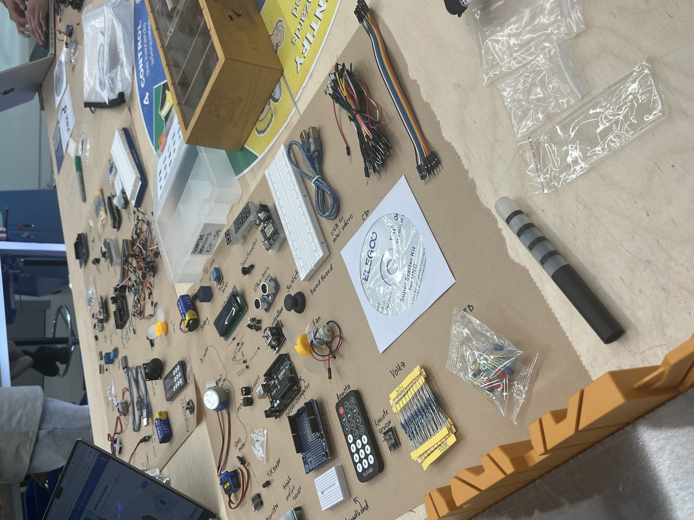
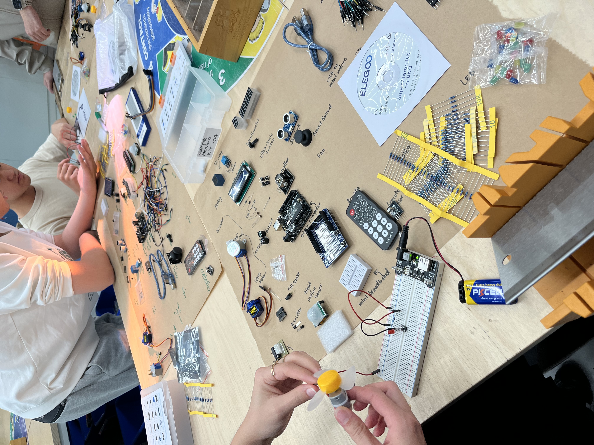
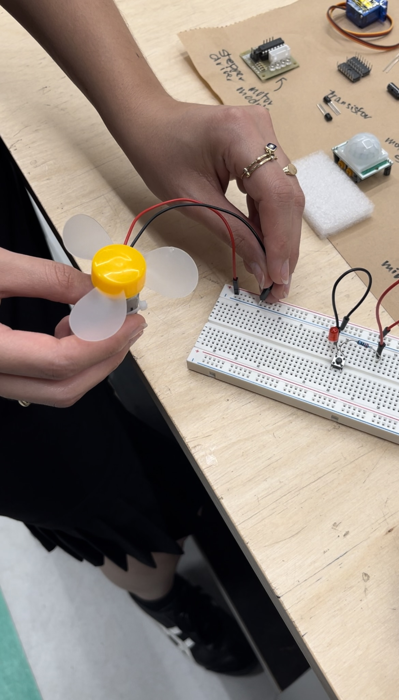

Spinergy
Project: Simple LED Light Circuit



After getting the hang of the light circuit, we moved on to the next logical step: making a fan spin. The setup was similar in structure—basic components, a bit of wiring, and the Arduino at the center calling the shots. Instead of an LED, we connected a small DC motor, which acted as our makeshift fan. We controlled it using a switch at first, and then tried adjusting its speed using analog input, just like we did with the tilt sensor for the light.